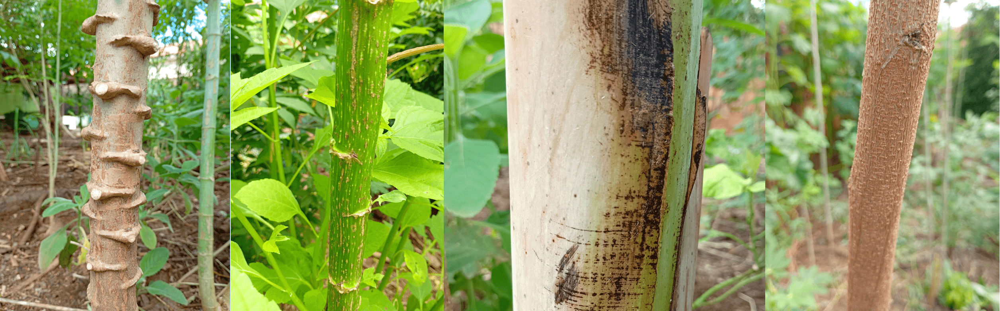

Este projeto tem como objetivo a massificação da agricultura florestal regenerativa e segurança alimentar adaptadas à crise climática.
Publicações

Como recuperar a fertilidade da terra e água:
Plantar árvores e cultivar alimentos saudáveis.